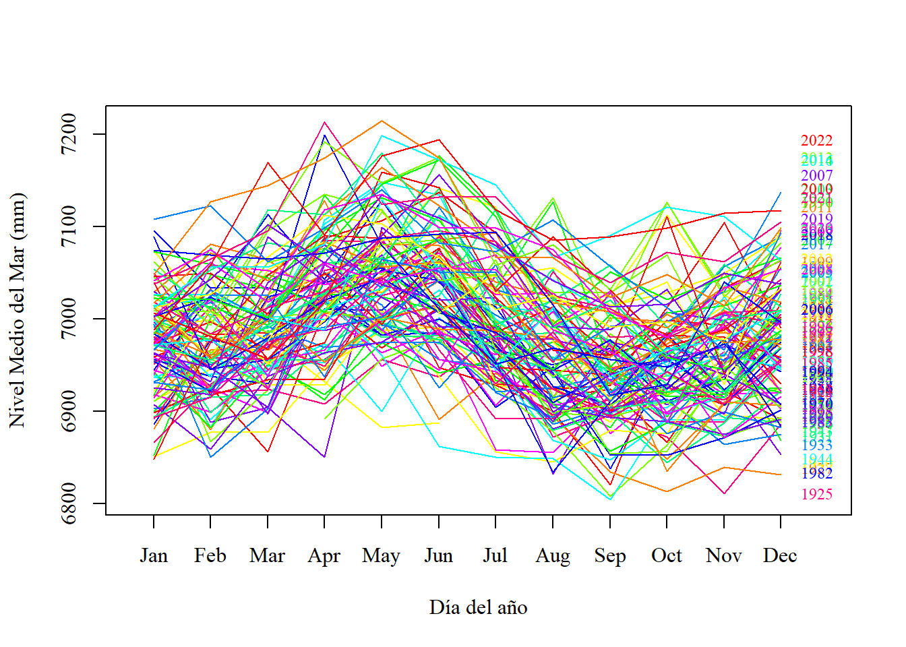
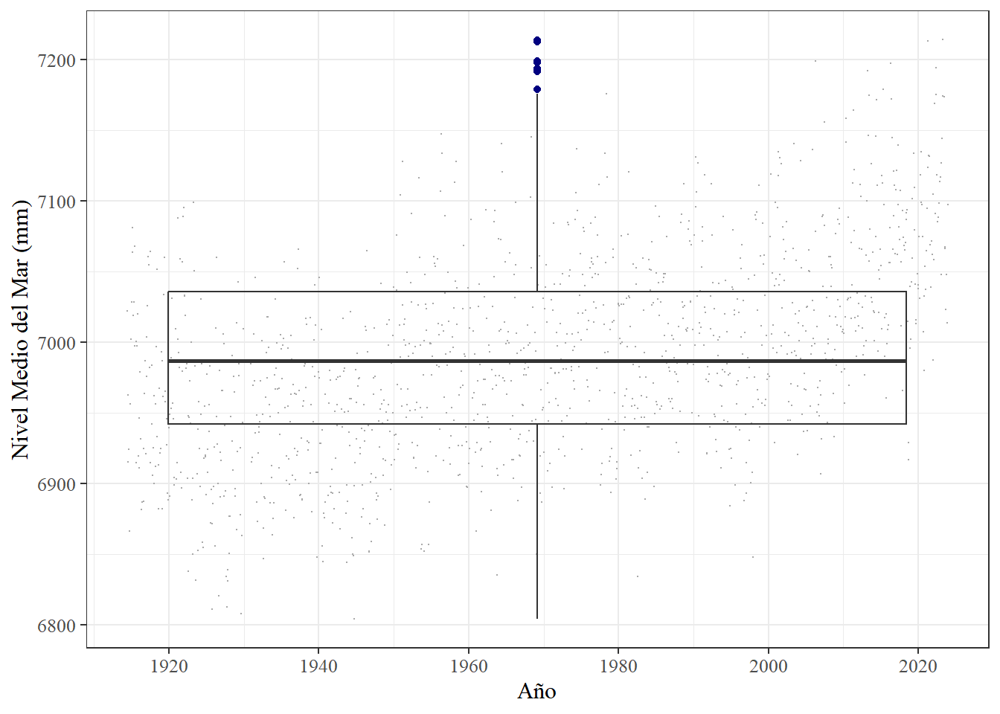
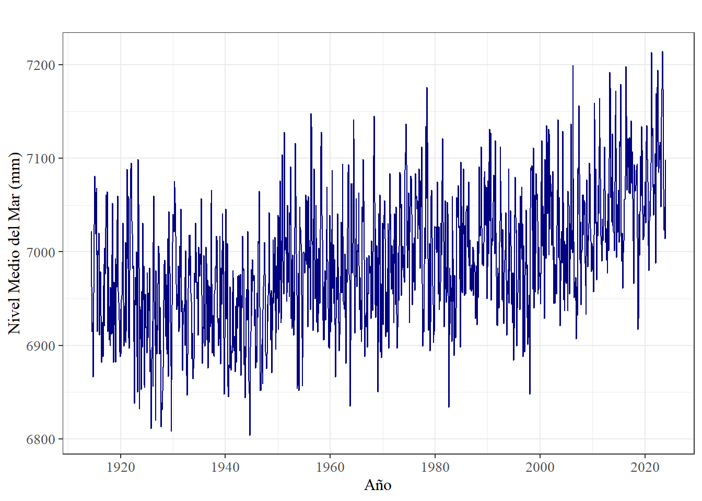
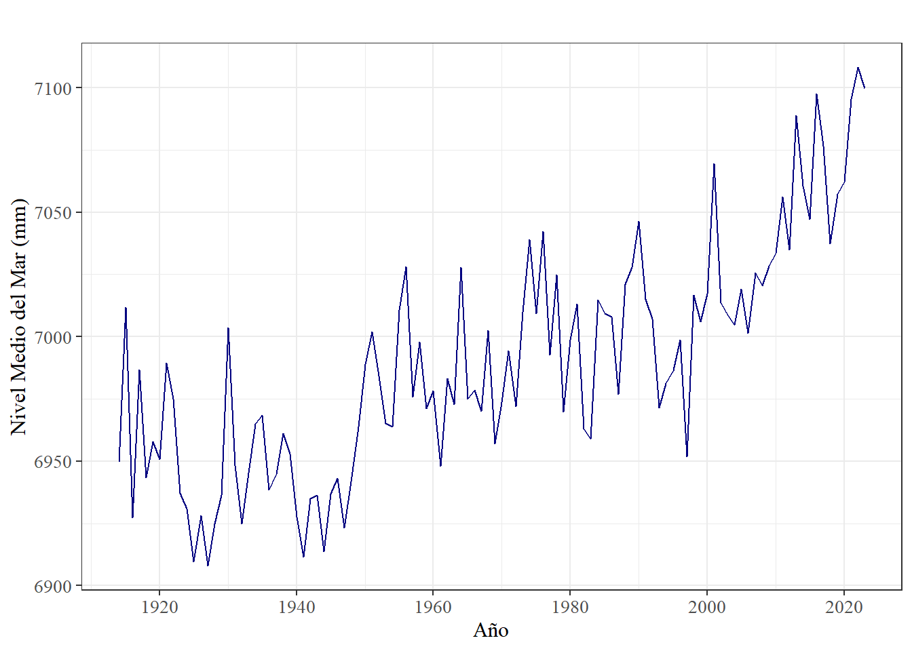
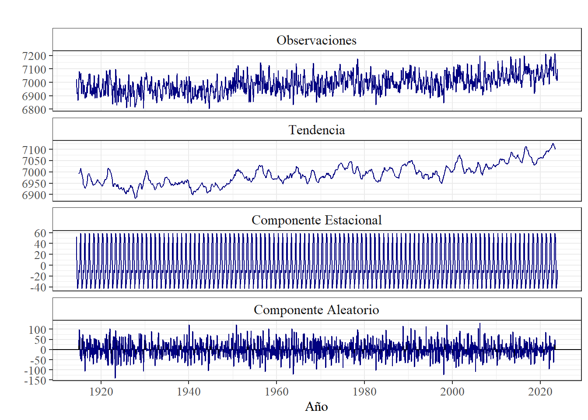
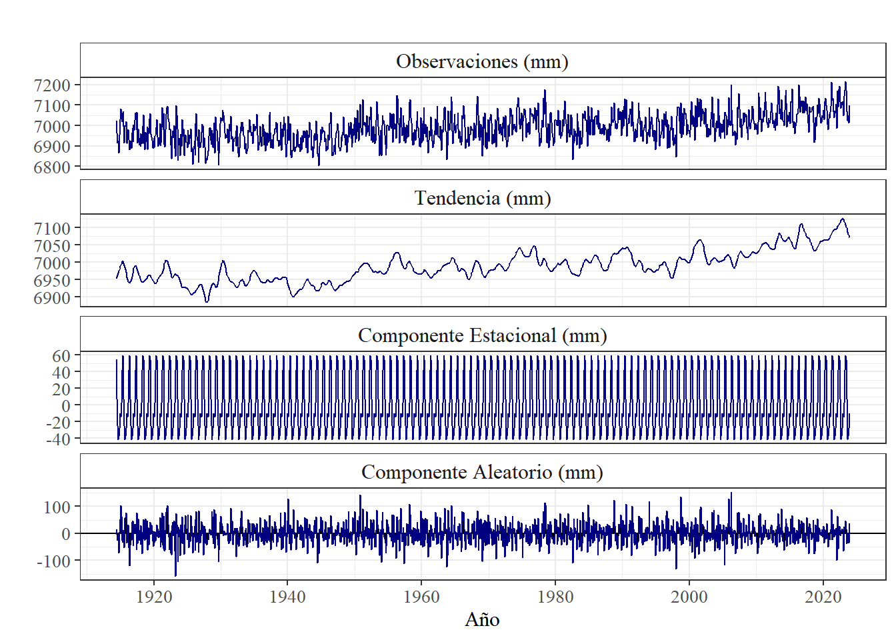

Cálculo de tendencia de nivel del mar mediante los datos recolectados por el mareográfo ubicado en Sidney Fort Deninson (Australia) y publicados a través del Servicio Permanente del Nivel Medio del Mar para el periodo comprendido entre los años 1914 y 2023 en calidad rlr
Comprobación de la metodología propuesta
Author
Karen Tsirú González Quesada
1Información de los datos utilizados
Fecha inicial: Junio de 1914 Fecha final: diciembre de 2023 Frecuencia de los datos: mensual Fuente de los datos: PSMSL Archivo: 2189.rlrdata Calidad de los datos: RLR
2Pasos para la obtención de la tendencia y otros resultados
2.1Ingreso de los datos
library(readr)Datos <-read.csv("https://psmsl.org/data/obtaining/rlr.monthly.data/196.rlrdata",#URL de los datosheader=FALSE, sep=";", #Sin nombre de columnasna.strings="-99999") #Declaración de datos vacios.head(Datos)
En el caso de los datos proporcionados por el PSMLS, la fecha está dada en formato decimal dentro de la primer columna (V1), por lo que se utilizó la función “date_decimal” de la librería de Lubridate con el fin de generar la fecha en formato sexagecimal.
library(lubridate)datos_fecha <-date_decimal(Datos$V1)datos_fecha <-ymd_hms(datos_fecha)datos_fecha <-strftime(datos_fecha, format ="%Y-%m")datos_fecha <-ym(datos_fecha)class(datos_fecha)
Adicionalmente, las mediciones que se encontraban en la segunda columna columna (V2) fueron almacenadas dentro de la variable “Mediciones”.
Mediciones <- Datos$V2
Una vez síntetizados los datos necesarios para la generación de la serie temporal, se reunen nuevamente dentro un mismo marco de datos. Adicionalmente se agregaron dos columnas nuevas, una que contiene el año de medición y otra que contiene el mes de medición, con la finalidad de facilitar el proceso a la hora de generar la serie temporal.
Gracias al formato en que son proporcionados los datos, la definición de los datos faltantes se realizó al introducir los datos al código.
Seguidamente, se realizó el cálculo del porcentaje de datos faltantes presentes en el conjunto de datos.
Porcentaje_MD <- (sum( #resumen de un único valoris.na(datos1$Medición))/length(datos1$Medición))*100#conversión a porcentajePorcentaje_MD
[1] 1.368821
Adicionalmente, se genera un resumen general de los datos.
summary(datos1)
Fecha Medición year month
Min. :1914-06-01 Min. :6804 Min. :1914 Min. : 1.000
1st Qu.:1941-10-16 1st Qu.:6942 1st Qu.:1941 1st Qu.: 4.000
Median :1969-03-01 Median :6987 Median :1969 Median : 7.000
Mean :1969-03-01 Mean :6990 Mean :1969 Mean : 6.513
3rd Qu.:1996-07-16 3rd Qu.:7036 3rd Qu.:1996 3rd Qu.:10.000
Max. :2023-12-01 Max. :7214 Max. :2023 Max. :12.000
NA's :18
3 Generación de gráfico preliminar
Inicialmente, los datos contenidos en la variable Mediciones, se transformaron a formato “time stamp” para posteriomente ser utilizados como una serie temporal.
ts_datos1 <-ts(data = datos1$Medición,start =c(datos1[1,3], datos1[1,4]),#Fecha de iniciofrequency =12)#Frecuencia de los datosclass(ts_datos1)
[1] "ts"
head(ts_datos1)
[1] 7022 6963 6915 6924 6866 6956
El gráfico preliminar tiene como objetivo mostrar las condiciones actuales del conjunto de datos sin aplicar ningún tratamiento a los mismos.
library(ggplot2)library(ggfortify)#permite a ggplot soportar objetos tsPrevPlot <-autoplot(ts_datos1, #conjunto de datoscolour ='navyblue')+#color de líneaggtitle("")+#Titulo en blancoxlab("Año")+#etiqueta eje xylab("Nivel Medio del Mar (mm)")+#etiqueta eje ytheme_bw() +#Tema en blanco y negro#Caracteristicas estéticas del gráficotheme(axis.title.x =element_text(size =12, family ='serif'),axis.title.y =element_text(size =12, family ='serif'),axis.text =element_text(size =10, family ='serif'))show(PrevPlot)
Con el mismo proposito de contemplar un panorama general de los datos, se realizó un gráfico de estacionalidad anual, en donde es posible observar el comportamiento de la marea por año, según la disponibilidad de datos.
library(forecast)PrevPlot2 <-seasonplot(ts_datos1, #conjunto de datostype ="l", #Tipo líneamain ="", #Titulo en blancocol=rainbow(12), #Abanico de coloresyear.labels =TRUE, #Mostrar etiquetaslabelgap =0.35, cex =0.75,xlab ="Día del año",ylab ="Nivel Medio del Mar (mm)",family ="serif", #Tipo de fuentesize =12#Tamaño de la fuente )+theme_bw()+theme(plot.title =element_text(face ='bold', size =14))

4 Identificación de datos irregulares
Como primer paso, se utilizó la función “tsoutliers” de manera que pueda indicar la presencia de datos irregulares.
Con el objetivo de realizar un análisis visual, se generó un diagrama de bigotes para identificar la presencia de datos atípicos dentro del conjunto. Esto no significa que los datos se hayan medido mal, únicamente muestra qué mediciones se salen de la normalidad con respecto al resto de los datos.
box_datos1 <-ggplot(datos1, #Conjunto de datosaes(x=Fecha, #Subconjunto 1y=Medición))+#Subconjunto 2geom_jitter(colour ="darkgrey", #Color de las observacionessize =0.1)+#Grosor de las observacionesgeom_boxplot(outlier.colour ="navyblue", #Color outliersfill ="transparent")+#Fondo del boxplotxlab("Año")+#Etiqueta eje xylab("Nivel Medio del Mar (mm)")+#Etiqueta eje ytheme_bw()+#Tema estéticotheme(text =element_text(family ='serif', #Tipo de fuentesize =12)) #Tamaño de la fuenteshow(box_datos1)

5 Tratamiento de los datos
Una vez identificados los datos faltantes y los datos irregulares, se realizó una limpieza al conjunto de datos mediante la herramienta “tsclean” generando el resultado de manera automática. Su función, en mayor medida, consistió en rellenar los datos faltantes de manera que la serie se complete.
library(forecast)clean_ts_datos1 <-tsclean(ts_datos1)plot_diario <-autoplot(clean_ts_datos1, #Conjunto de datoscolour ='navyblue', #Color observacionesmain =" ")+#Titulo en blancoxlab("Año")+#Etiqueta eje xylab("Nivel Medio del Mar (mm)")+#Etiqueta eje ytheme_bw() +#Tema en blanco y negro#Caracteristicas estéticastheme(axis.title.x =element_text(size =12, family ='serif'),axis.title.y =element_text(size =12, family ='serif'),axis.text =element_text(size =10, family ='serif'))show(plot_diario)

summary(clean_ts_datos1)
Min. 1st Qu. Median Mean 3rd Qu. Max.
6804 6942 6987 6990 7036 7214
Además, se recolectaron los datos ya tratados dentro de un nuevo marco de datos.
plot_anual <-autoplot(ts_prom_anual, colour ='navyblue', main =" ")+xlab("Año")+ylab("Nivel Medio del Mar (mm)")+theme_bw() +theme(plot.title =element_text(hjust =0.5, size =14, family ='serif', face ='bold'),axis.title.x =element_text(size =12, family ='serif'),axis.title.y =element_text(size =12, family ='serif'),axis.text =element_text(size =10, family ='serif'))show(plot_anual)

6 Descomposición de la serie
Inicialmente se definió el nivel de autocorrelación de la serie a través del test de Durbin-Watson.
Augmented Dickey-Fuller Test
data: clean_ts_datos1
Dickey-Fuller = -6.7237, Lag order = 10, p-value = 0.01
alternative hypothesis: stationary
Una vez establecida la autocorrelación y no estacionalidad de los datos, se procede a realizar la descomposición de la serie.
library(ggplot2)library(forecast)#Proceso de descomposición de la seried_clasical <-decompose(clean_ts_datos1)#Graficación de resultado de la descomposiciónautoplot(d_clasical, range.bars =FALSE)+ggtitle(paste0(" "#Titulo en blanco )) +theme_bw() +#tema definido en blanco y negro#definición de las caracteristicas estéticas del gráfico theme(title =element_text(family ="serif", size =12, face ="bold", hjust =0.5, vjust =0.5),axis.text =element_text(family ="serif", size =10),axis.title.x =element_text(face ="plain", size =12),axis.title.y =element_text(face ="plain", size =12),strip.background =element_rect(fill ="white"),strip.text =element_text(family ="serif", size =12) )+labs(x ="Año", y ="") +geom_line(colour ="navyblue")+#color de la líneafacet_wrap(~parts, #definición de los titulos de los subconjuntoslabeller =labeller(parts =c(data ="Observaciones",trend ="Tendencia",seasonal ="Componente Estacional",remainder ="Componente Aleatorio" ) ),ncol =1,scales ="free_y" )

library(forecast)#Proceso de descomposición de la seried_stl <-stl(clean_ts_datos1, s.window ="periodic", robust =TRUE)#Graficación de resultado de la descomposiciónautoplot(d_stl, range.bars =FALSE)+ggtitle(paste0(" "#Titulo en blanco )) +theme_bw() +#tema definido en blanco y negro#definición de las caracteristicas estéticas del gráficotheme(title =element_text(family ="serif", size =12, face ="bold", hjust =0.5, vjust =0.5),axis.text =element_text(family ="serif", size =10),axis.title.x =element_text(face ="plain", size =12),axis.title.y =element_text(face ="plain", size =12),strip.background =element_rect(fill ="white"),strip.text =element_text(family ="serif", size =12) ) +labs(x ="Año") +geom_line(colour ="navyblue")+#color de la líneafacet_wrap(~parts, #definición de los titulos de los subconjuntoslabeller =labeller( parts =c(data ="Observaciones (mm)",trend ="Tendencia (mm)",seasonal ="Componente Estacional (mm)",remainder ="Componente Aleatorio (mm)")),ncol =1,scales ="free_y")

7 Calculo de la tasa de cambio del nivel medio del mar
Mediante una regresión lineal, se calculó la tasa relativa del cambio del nivel medio del mar, dando como resultado la velocidad del movimiento en mm/años